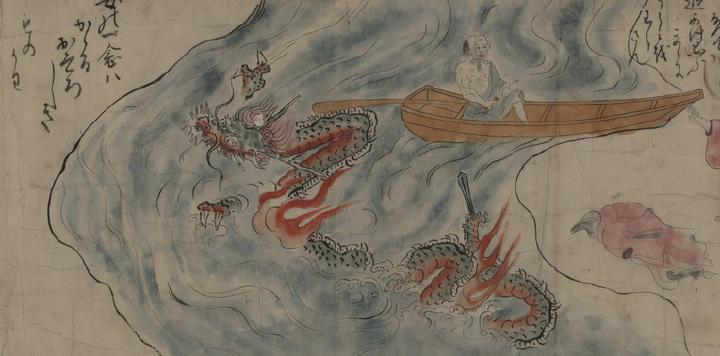

大蛇と化して天田川を渡る清姫。鱗は緑色で、蛇腹は赤く、額に長い角を2本生やしている。尾は剣のようになっている。岸辺には着ていた赤い衣が残されている。詞書に「女の一念はかゝるおそろしきものかわ」とある。
出典：親書誌：U426_nichibunken_0152：道成寺縁起；ドウジョウジエンギ／日付：2010／資源識別子：U426_nichibunken_0152_0008_0000
Copyright (c)2010- International Research Center for Japanese Studies, Kyoto, Japan. All rights reserved.